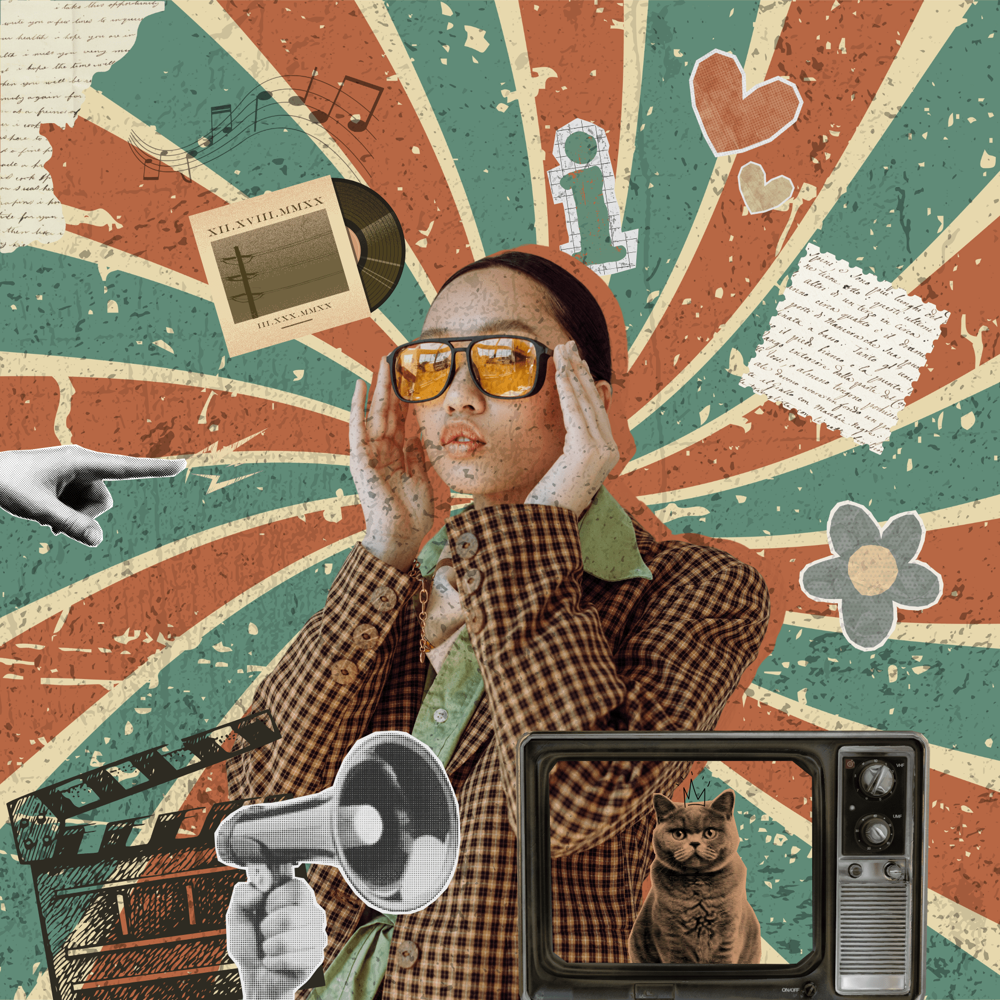
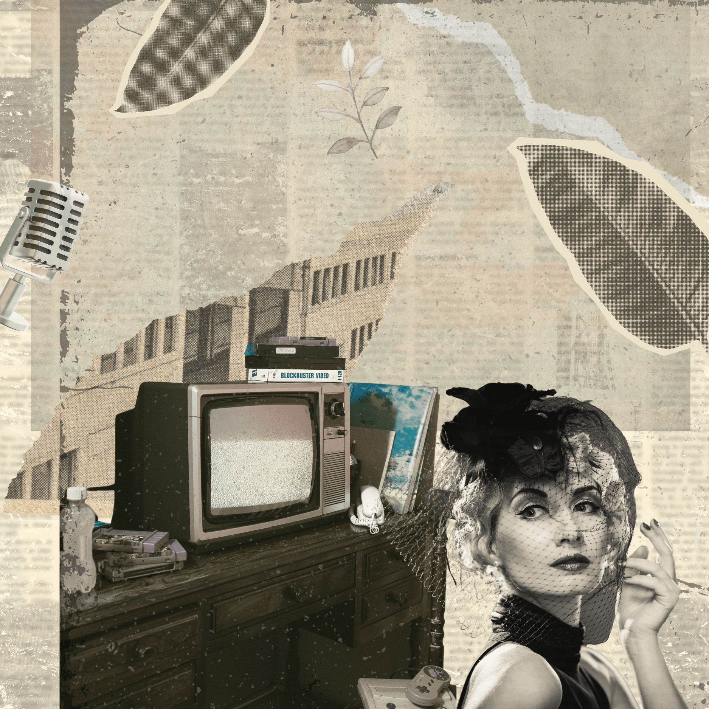

Projenin Amacı: Tipografik afişlerle sosyal medya etkileşimini artırmak.
Katkılarım: Renk paleti seçimi, 3D efekt uygulamaları, tipografi tasarımı.
Sonuç ve Potansiyel: Daha fazla görsel etkileşim ve marka farkındalığı sağlandı.
Anahtar Kelimeler: Grafik tasarımcı, peyzaj mimarı, tasarımcı

